MAKE SOMETHING
Beautiful BY HAND.
Step into our relaxed studio for hands-on floral design workshops. Master vessel proportions, stem binding, and seasonal composition techniques.
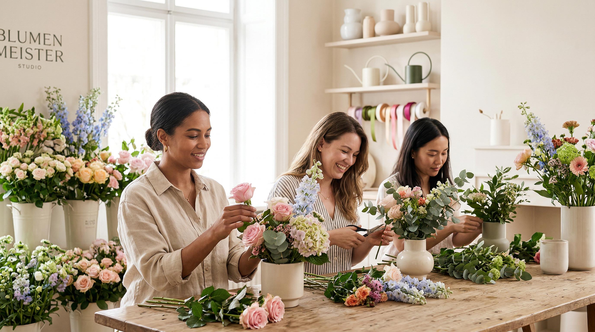
FLOWERS. HANDS. A LITTLE TIME TO CREATE.
Step into our warm, light-filled studio for an inspiring hands-on floral design session. Guided by master florists, you'll work with fresh local seasonal harvests, artisan pottery vessels, and sustainable mechanics — creating a bespoke centerpiece that is completely your own.
THE 4-STEP WORKSHOP JOURNEY
From unconditioned regional stems to a finished sculptural masterpiece — how your hands-on studio session unfolds.
STEM & FOLIAGE CURATION
Inspect freshly conditioned stems from regional farms. Master underwater 45° angle trimming, leaf stripping, and seasonal palette harmony pairing.
PROPORTION & VESSEL ANCHORING
Master sustainable zero-foam Japanese kenzan pin frogs and spiral grid binding for permanent structural stability inside your handmade ceramic bowl.
NEGATIVE SPACE & SCULPTURAL FORM
Establish focal blooms, create airy negative space, and add natural height transitions that bring your botanical composition to life with organic movement.
TAKE-HOME CREATION & LONGEVITY
Safely package your creation in bespoke linen wrap and carry boxes, accompanied by a floral preservation card and ceramic bowl to keep for up to 14 days of bloom life.
INSIDE THE STUDIO
An editorial glimpse into our hands-on floral sessions, seasonal materials, and studio moments.
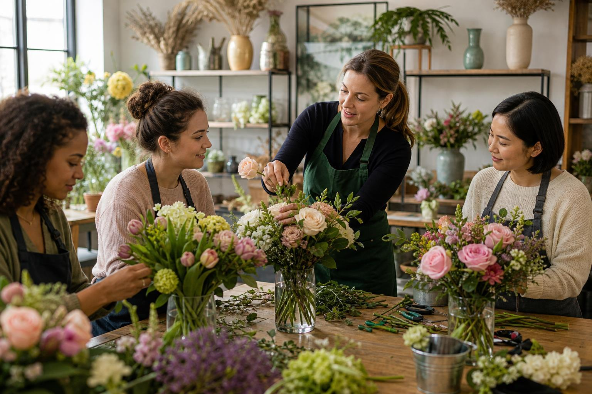
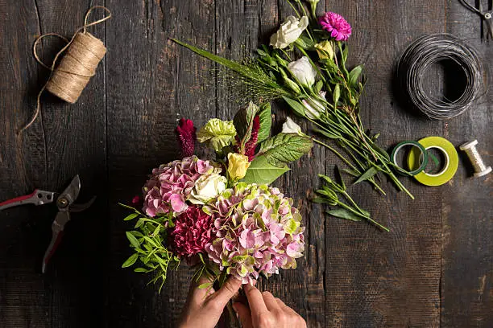
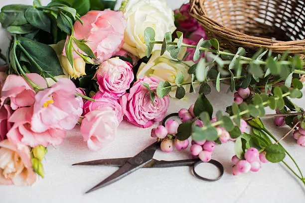
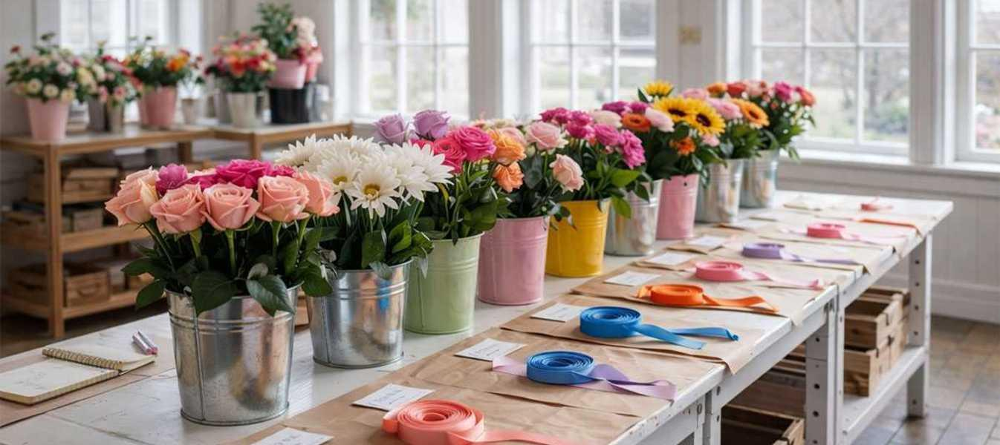
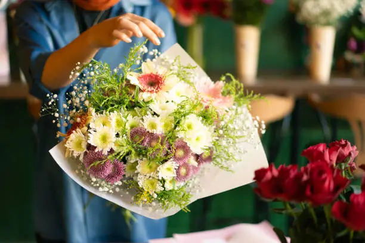
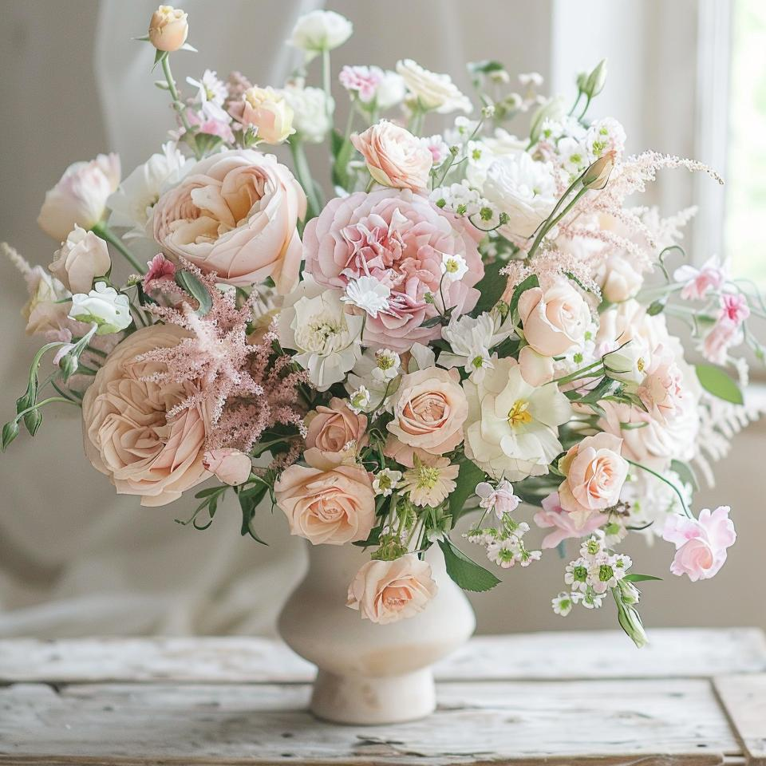
EXPLORE THE ARTISAN WORKBENCH
Experience how you'll sculpt your floral arrangement step-by-step at your personal studio worktable.
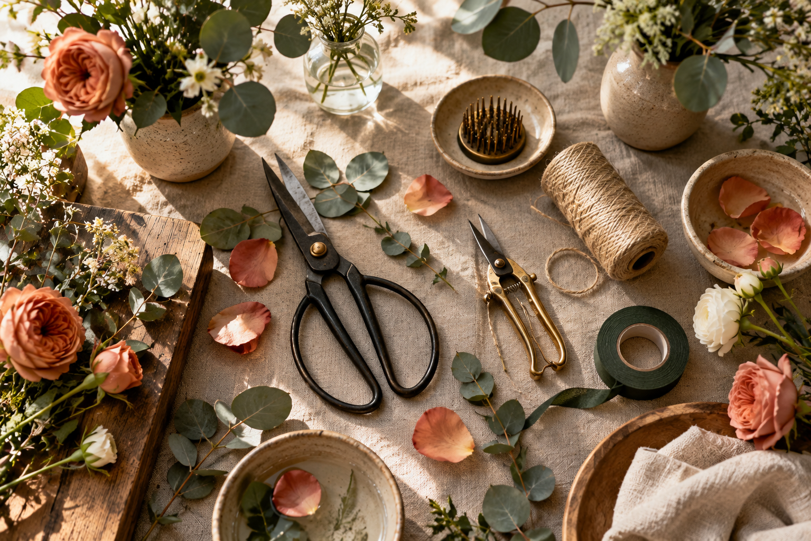
Vessel Selection & Hydration Base
Select your ceramic vessel shape and prepare the water reservoir. You'll master Japanese pin frog positioning for organic weight distribution.
Unlike disposable floral foam which contains microplastics and suffocates stem ends, metal pin frogs allow stems to drink clean water freely for twice the vase life.
DESIGNED AROUND THE SEASON.
Our workshop themes evolve with the natural calendar, highlighting peak seasonal blooms.
Garden Bloom & Delicate Stems
Celebrate rebirth with soft pastel garden roses, early ranunculus, sweet peas, and fresh eucalyptus branches.
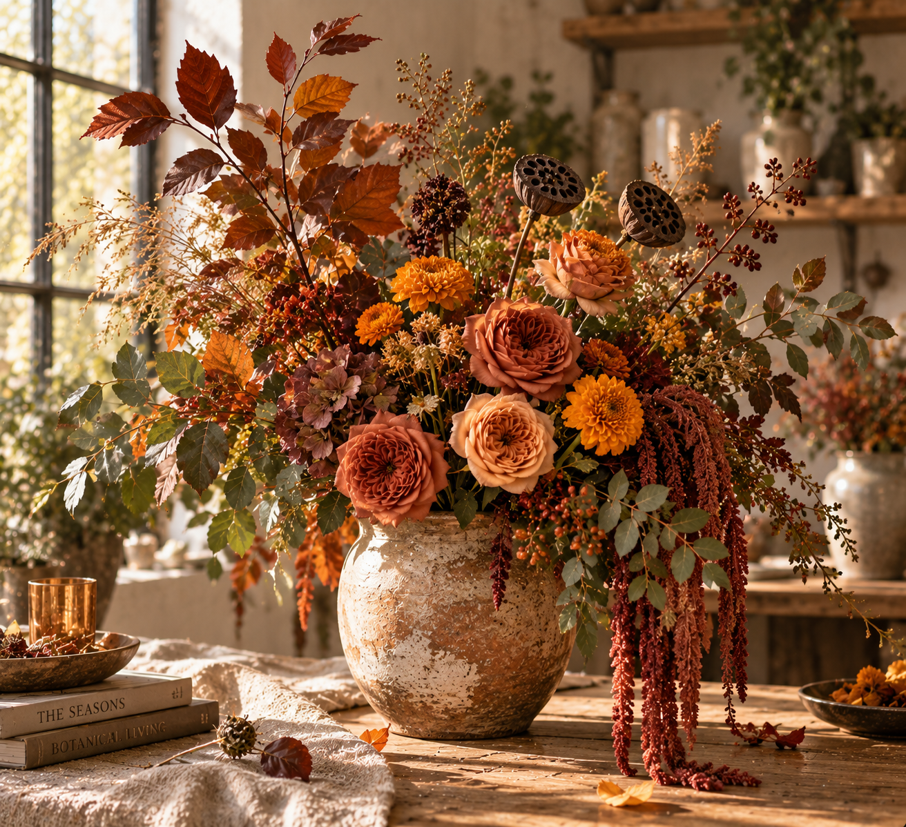
MAKE IT YOURS.
Gather your favorite people or bring your team together for a memorable hands-on creative floral session tailored to your occasion.
- Private Studio Birthday Gatherings
- Bridal & Milestone Celebrations
- Corporate Team Building & Creative Breaks
- Custom Floral Styling & Table Experiences
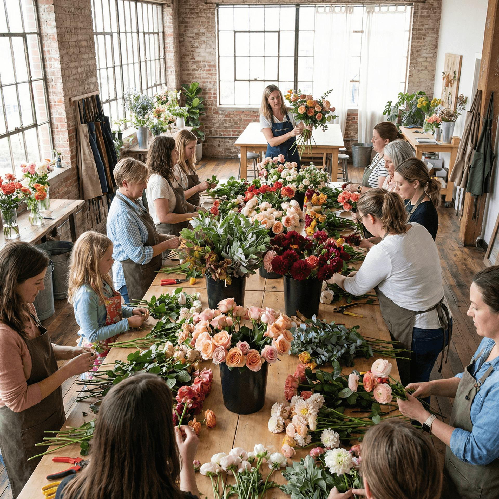
THE CRAFT OF SUSTAINABLE FLORAL ARCHITECTURE.
Every session at Bloom & Form emphasizes eco-friendly floral design principles. We teach you how to create structural, long-lasting centerpiece forms without non-biodegradable floral foam.
Master Japanese metal pin frog techniques for natural stem placement and organic angles.
Learn stem trimming, foliage stripping, and hydration tricks that extend flower life up to two weeks.
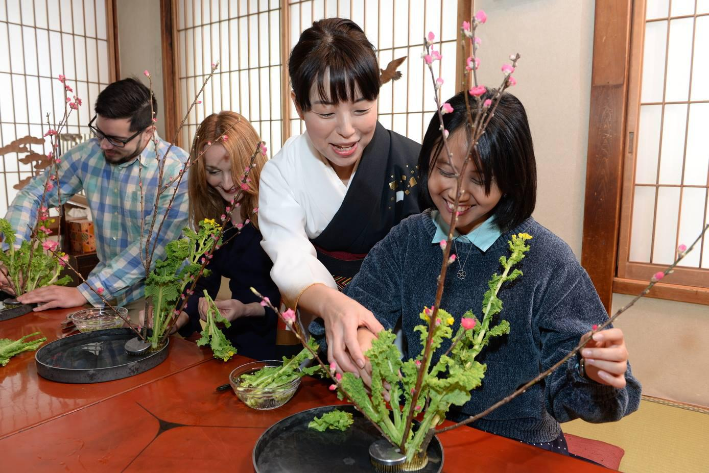
LOVED BY CREATIVE ATTENDEES
Read real stories from guests who joined our hands-on studio sessions.
"I came with zero confidence in floral arranging. In just two hours, the instructors guided us through stem heights and color balance. My table centerpiece lasted 12 days at home!"
"Booking a private workshop session for my partner's birthday was the best decision! Beautiful atmosphere, tea, ceramic vessels, and fresh garden roses everywhere."
"The quality of flowers provided was out of this world. Learning sustainable zero-foam techniques changed how I buy and arrange flowers forever."